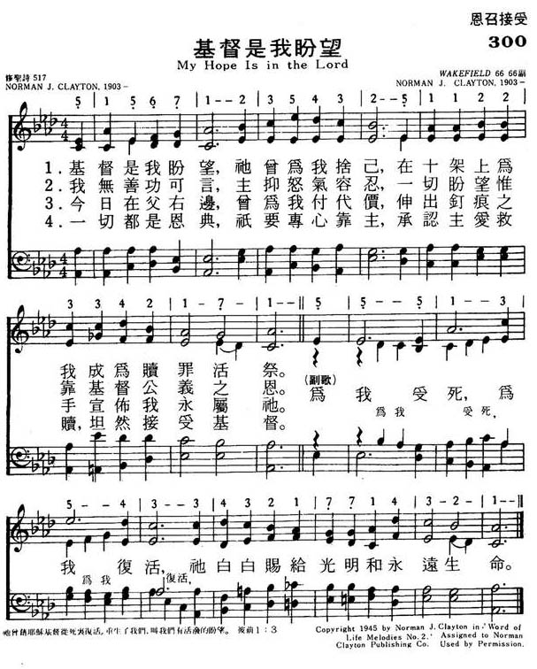

|
|
颂主新歌 |
|
My hope is in the Lord |
1.耶稣是我盼望，衪曾为我舍已
|
|
https://www.mred365.cn/szxg/7303.html  |
|
|
|
|

琴 https://youtu.be/Z-prz9w4JR8 - Capital Hymn: "My Hope is in the Lord"
https://youtu.be/ZPl-HHce4c4
| Text: | My Hope Is in the Lord |
| Author: | Norman J. Clayton |
| Tune: | WAKEFIELD |
| Composer: | Norman J. Clayton |
| Short Name: | Norman J. Clayton |
| Full Name: | Clayton, Norman J., 1903-1992 |
| Birth Year: | 1903 |
| Death Year (est.): | 1992 |
Norman Clayton was born on January 22, 1903 in Brooklyn, New York, the ninth of ten children.
He was converted at the age of six in the South Brooklyn Gospel Church, where his mother had been a foundation member … and was church organist by the age of 12. He kept up the role of church organist for the rest of his life.
Clayton’s profession was in the building industry, but he also created his own publishing house, Gospel Songs, which was later absorbed into the Rodeheaver Company.
In 1942 he was working with Jack Wyrtzen’s Word of Life organization, providing music for both the radio broadcasts and crusade meetings.
That same year Clayton wrote his most popular gospel song, words and music, "Now I Belong to Jesus."
Another lovely and popular song is “Every Moment of Every Day”.
According to Kenneth Osbeck, Norman Clayton “tells how it is his usual practice to write the music first before the words,” and that “he feels it is vitally important that every song he writes be biblically based” (101 More Hymn Stories, page 204).
In order to create songs worthy of His Lord, Clayton made it his practice to memorise scripture, so his songs would have a strong Biblical basis. He also found it easiest to write songs for special occasions. Clayton’s gospel songs were eminently singable, musically sweet and tender of sentiment.
Clayton’s most popular songs reflect his evangelical emphasis, focused on the saving work of Christ and the sweetness of relationship with God through Him. The absence of deeper or more divers theological issues may have robbed Clayton of a more enduring place in Christian song-writing. By the time of his death churches were beginning their push into more upbeat music and more Charismatic themes.
Normal Clayton died in 1992, at the age of 89.
Tune Information
| Title: | WAKEFIELD (Clayton) |
| Composer: | Norman J. Clayton (1945) |
| Meter: | 6.6.6.6 with refrain |
| Incipit: | 51567 12354 32511 |
| Key: | A♭ Major |
| Copyright: | © 1945 Norman J. Clayton, © renewed 1973 Norman Clayton Publishing (A Div. of Word, Inc.) |
Words: Norman John Clayton (b. Jan. 22, 1903; d. June 1,
1992)
Music: Wakefield, by Norman John Clayton
Links:
Wordwise Hymns (Norman
Clayton)
The Cyber Hymnal (Norman
Clayton)
Note: Norman Clayton had a varied employment career. In his early years, he worked on a dairy farm, and then in an office in New York City, also in construction, and in a bakery, before moving on to a full-time career in sacred music. (You can learn a bit more about him in the Wordwise Hymns link.)
This is a twentieth century hymn, having been written in 1945, in Malvern, New York. The tune, Wakefield, was named after the composer’s mother, Alice Wakefield. The strong, matter-of-fact movement of the melody expresses certainty and confidence in God.
The hymn provides a clear and biblical explanation of the work of salvation. Trace the truths Norman Clayton presents so simply and carefully, through the Scriptures, and you will see what a fine declaration of the gospel of grace he gives us.
Let’s begin with the word “hope.” We tend to use that word of a wish or a maybe. (E.g. “I hope it won’t rain on Saturday. We’re going to a ball game.”) But in Scripture, the word is better defined as: the joyful certainty of future blessing. It describes a settled confidence in God, and His faithful Word. a “living hope.”
CH-1. Our hope rests in the Lord Jesus Christ (Acts 16:30-31), who gave Himself for us on the cross (Gal. 2:20), to pay our debt of sin (I Cor. 15:3; I Pet. 2:24). And the necessary companion of that is His resurrection. “For me He died, for me He lives” (refrain). “Blessed be the God and Father of our Lord Jesus Christ, who according to His abundant mercy has begotten us again to a living hope through the resurrection of Jesus Christ from the dead” (I Pet. 1:3).
CH-2. The saving work of Christ is not just a hope, it’s our only hope (Jn. 14:6; Acts 4:12). Good works can’t save us, nor church membership, nor special rituals, nor anything else we may do (Eph. 2:8-9; Tit. 3:5). “All have sinned” (Rom. 3:23), and sinners are “condemned already” (Jn. 3:18). A righteous God is “angry with the wicked every day” (Ps. 7:11). “The wrath of God is revealed from heaven against all ungodliness and unrighteousness of men” (Rom. 1:18).
What, then, is the answer? Simply that God, in grace, has provided a sinless Substitute to die in our place, and pay our debt of sin. When we trust in Christ as our Saviour, His righteousness is credited to our account, just as our debt of sin was charged to Him. For He [God the Father] made Him who knew no sin to be sin for us, that we might become the righteousness of God in Him” (II Cor. 5:21).
CH-3 concerns the present intercessory work of Christ, as our great High Priest in heaven. When the work of redemption was accomplished, Christ ascended on high, and is seated at the right hand of the Father (Heb. 1:3). His presence there eternally proclaims that our debt has been paid (Rom. 8:33-34). “Therefore He is also able to save to the uttermost [completely and forever] those who come to God through Him, since He always lives to make intercession for them” (Heb. 7:25).
CH-4. This is a work of grace, God’s unearned and unmerited favour, given “freely.” “By grace you have been saved through faith” (Eph. 2:8). Grace renders any human effort unnecessary and totally irrelevant. Works cannot coexist with grace in saving us. “To him who works, the wages are not counted as grace but as debt. But to him who does not work but believes on Him who justifies the ungodly, his faith is accounted for righteousness” (Rom. 4:4-5; cf. 11:6).
1) My hope is in the Lord
Who gave Himself for me,
And paid the price of all my sins
At Calvary.
For me He died,
For me He lives
And everlasting life and light
He freely gives.
4) His grace has planned it all,
‘Tis mine but to believe,
And recognize His work of love
And Christ receive.
To study the words of this song, and check out the Scriptures behind them, is to come to a better understanding of what salvation is, and how it was accomplished.
Questions:
1) If you could write another stanza for Mr. Clayton’s hymn, is there
anything you would add to his explanation of the gospel?
2) Does your church preach the gospel in this clear and straightforward way?
Links:
Wordwise Hymns (Norman
Clayton)
The Cyber Hymnal (Norman
Clayton)
https://wordwisehymns.com/2013/06/17/my-hope-is-in-the-lord/